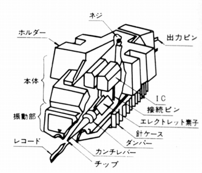
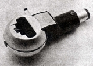
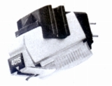
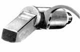
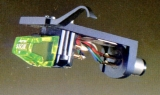
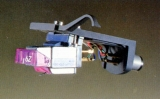
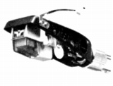
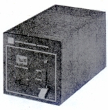
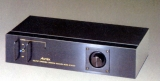

TOSHIBA（東芝）/AUREX （オーレックス）
東芝が1970年代から1980年代にかけて、一般の家電製品に用いた"TOSHIBA"とは別にオーディオ製品に用いたブランド名。東芝自体は（＊）現在もAV製品を作り続けているがかつてはVTR、最近はテレビ、ブルーレイ・レコーダーなど映像関係を主力とし、純粋なオーディオ製品の大半は「オーレックス」ブランド時代に出していたため、こちらの名義で同社のアナログ関連をまとめる。
Λコンデンサーや無酸素銅板＝厚さ1mm（1000ミクロン）という極厚のプリント基盤を使用したアンプ
等で有名だが、ヘッドフォンをはじめとするトランデュサー（変換器）では、コンデンサー型に注力していたメーカーであり、スタックスを除けばコンデンサー型ヘッドフォンの機種数を最も発表したメーカーである。
アナログ関連ではカートリッジにこだわりを見せ、一般的なMM型以外の形式を主力としていた。1970年代初頭までは光電型であり、1970年代中盤以降はエレクトレット・コンデンサー型であった。1974年頃には自社のプリメインにコンデンサーカートリッジ用イコライザーを標準装備するほど力を入れていたが、1980年代に入り、ヘッドフォンより早く撤退していった。
（＊）上記文書はサイト公開時（2010年）に記述したものです。

（左が光電型カートリッジC-100Pの構造図、右がエレクトレット・コンデンサー型C-401Sの構造図）
�T.カートリッジ
1.光電型カートリッジ
トリオ（現 ケンウッド）、オプトニカ（現 シャープ）と共に、1970年代初頭までは光電型を売りにしていた。専用のイコライザーが必要。

(C-100P)2.エレクトレット・コンデンサー型カートリッジ
ヘットフォンと同様に1970年初頭以降はエレクトレット・コンデンサー型を主力とした。1969年に発表（発売は1971年12月）したC-401Sが最初のモデルであり、後にラインコンタクト系の針を持つ上位モデルC-404X、丸針の廉価モデルC-407Sが追加される。二世代としては、ボロンカンチレバーを持つC-400や、コンプリメンタリー方式を採用した一体型のC-4000がある。通常のフォノイコライザーでは使えず、専用のイコライザーが必要。なお、C-401SからC-400までの4モデルには、交換針の互換性がある。

(C-401S）
(C-4000)3.MM型カートリッジ
カーボンファイバーカンチレバー採用が特徴のC-550系と、上位機種のC-6系がある。C6系には交換針の互換性あり。

(C-550�U）
4.IM型カートリッジ
CD-4対応用のカートリッジ。

(C-220M）
�U.光電型/エレクトレット・コンデンサー型カートリッジ用イコライザー
光電型にしろ、エレクトレット・コンデンサー型にしろ、所定のイコライザー回路は必要であり、一部のオーレックス製アンプを除き、一般のアンプのフォノ端子には接続できない。SZ-1は光電型用のイコライザー、 SZ-200・SZ-1000はエレクトレット・コンデンサー型カートリッジ用のイコライザーである。SZ-200はMC型用昇圧トランスに似た外見で、他の電磁型カートリッジ用の「パス」ポジションがある。SZ-1000は出力30mVというエレクトレット・コンデンサー型カートリッジの特性を生かし、直接パワー・アンプと接続することを意図した製品である。


(左 SZ-1 右 SZ-1000)
トーンアーム、ヘッドシェルその他については現時点では確認できない。